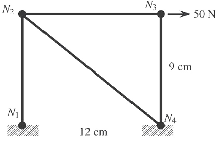

Exercício 1
Aluno: Rafael Lúcio Negrão Cordeiro
Matrícula: 201310323
Disciplina: CET961 - Engenharia Assistida por Computador
- Tres corpos rígidos, identificados por 2, 3, e 4, estao unidos por quatro molas, conforma mostra a Fig. 1. Uma força horizontal de 1.000 N é aplicada ao corpo 4. Encontre os deslocamentos dos tres corpos e as forças (traçao/compressao) nas molas. Qual é a reaçao na parede? Admita que os corpos só possam sofrer translaçao na direçao horizontal. As constantes de mola (N/mm) sao: $K_1 = 400$, $K_2 = 500$, $K_3 = 500$ e $K_4 = 300$.

Figura 1: Estrutura da questao 1
k1 = 400 # N / mm
k2 = 500 # N / mm
k3 = 500 # N / mm
k4 = 300 # N / mm
f4 = 1000 # N
u1 = 0 # Unidade de deslocamento
Compondo o sistema na notaçao matricial $[K^{(g)}]{U^{(g)}} = {F^{(g)}}$, temos:
$$ \overbrace{ \begin{bmatrix} k_1+k_3 & -k_1 & -k_3 & 0\ -k_1 & k_1+k_2 & -k_2 & 0\ -k_3 & -k_2 & k_2+k_3+k_4 & -k_4\ 0 & 0 & -k_4 & k_4 \end{bmatrix} }^{[K^{(g)}]} \overbrace{ \begin{Bmatrix} u_1\ u_2\ u_3\ u_4 \end{Bmatrix} }^{{U^{(g)}}}
\overbrace{ \begin{Bmatrix} f_1\ f_2\ f_3\ f_4 \end{Bmatrix} }^{{F^{(g)}}} $$
Onde, substituindo, temos:
$$ \begin{bmatrix} 400+500 & -400 & -500 & 0\ -400 & 400+500 & -500 & 0\ -500 & -500 & 500+500+300 & -300\ 0 & 0 & -300 & 300 \end{bmatrix}\begin{Bmatrix} 0\ u_2\ u_3\ u_4 \end{Bmatrix}
\begin{Bmatrix} R_1\ 0\ 0\ 1000 \end{Bmatrix} $$
Ao executar as multiplicações das matrizes, temos:
$$ \begin{cases} -400u_2 - 500u_3 = R_1\ 900u_2 - 500u_3 = 0\ -500u_2 + 1300u_3 -300u_4 = 0\ 0u_2 - 300u_3 + 300u_4= 1000 \end{cases} $$
Se isolarmos todas as variáveis para o lado esquerdo da equaçao, teremos: $$ \begin{cases} -400u_2 - 500u_3 + 0u_4 - R_1 = 0\ 900u_2 - 500u_3 + 0u_4 + 0R_1 = 0\ -500u_2 + 1300u_3 - 300u_4 + 0R_1 = 0\ 0u_2 - 300u_3 + 300u_4 + 0R_1 = 1000 \end{cases} $$
Da algebra linear, verifica-se que pode-se resolver um sistema de 4 equaçoes com 4 variáveis com uma matriz de seus coeficientes:
$$ \begin{bmatrix} -400 & -500 & 0 & -1\ 900 & -500 & 0 & 0\ -500 & 1300 & -300 & 0\ 0 & -300 & 300 & 0 \end{bmatrix} \begin{bmatrix} u_2\ u_3\ u_4\ R_1 \end{bmatrix}
\begin{bmatrix} 1\ 0\ 0\ 1000 \end{bmatrix} $$
Existe uma biblioteca no python dedicada a resolver equações organizadas na forma matricial acima. No pacote numpy, módulo de algebra linear. O código a seguir criará os vetores da matriz acima e executará o módulo de algebra linear do numpy, já entregando os resultados.
import numpy as np
# coeffs de coeficientes
coeffs = [[-400, -500, 0, -1],
[900, -500, 0, 0],
[-500, 1300, -300, 0],
[ 0, -300, 300, 0]]
# image de conjunto imagem de uma função
image = [1, 0, 0, 1000]
# Transformando os vetores nativos python em vetores numpy
coeffs = np.array(coeffs)
image = np.array(image)
# Visualizando o conteúdo dos vetores
coeffs, image
(array([[-400, -500, 0, -1],
[ 900, -500, 0, 0],
[-500, 1300, -300, 0],
[ 0, -300, 300, 0]]),
array([ 1, 0, 0, 1000]))
# Resolvendo ele com o módulo de álgebra linear
variaveis = np.linalg.solve(coeffs, image)
print('Os resultados são: u2 = %.2em, u3 = %.2em, u4 = %.2em e f1 = %.2eN' % tuple(variaveis))
Exercício 2
Aluno: Rafael Lúcio Negrão Cordeiro
Matrícula: 201310323
Disciplina: CET961 - Engenharia Assistida por Computador
- Tres corpos rígidos, identificados por 2, 3 e 4, estao unidos por seis molas, conforme mostra a Fig. 2. As paredes rígidas sao representadas por 1 e 5. Uma força horizontal $F_3 = 1.000$ é aplicada ao corpo 3 no sentido mostrado. Encontre os deslocamentos dos tres corpos e as forças (traçao/compressao) nas molas. Quais sao as reaçoes nas paredes? Admita que os corpos só possam sofrer translaçao na direçao horizontal. As constantes de mola (N/mm) sao: $K_1 = 500$, $K_2 = 400$, $K_3 = 600$, $K_4 = 200$, $K_5 = 400$ e $K_6 = 300$.
 Figura 2: Estrutura da questao 2 e 3
Figura 2: Estrutura da questao 2 e 3
k1 = 500 # N / mm
k2 = 400 # N / mm
k3 = 600 # N / mm
k4 = 200 # N / mm
k5 = 400 # N / mm
k6 = 300 # N / mm
f3 = 1000 # N
u1 = u5 = 0
u1 = u4 = 0 # Unidade de deslocamento
Compondo o sistema na notaçao matricial $[K^{(g)}]{U^{(g)}} = {F^{(g)}}$, temos:
$$ \overbrace{ \begin{bmatrix} k_1 + k_4 & -k_1 & -k_4 & 0 & 0\ -k_1 & k_1 + k_2 + k_3 & -k_3 & -k_2 & 0\ -k_4 & -k_3 & k_3 + k_4 + k_5 & -k_5 & 0\ 0 & -k_2 & -k_5 & k_2 + k_5 + k_6 & -k_6\ 0 & 0 & 0 & -k_6 & k_6 \end{bmatrix} }^{[K^{(g)}]} \overbrace{ \begin{Bmatrix} u_1\ u_2\ u_3\ u_4\ u_5 \end{Bmatrix} }^{{U^{(g)}}}
\overbrace{ \begin{Bmatrix} f_1\ f_2\ f_3\ f_4\ f_5 \end{Bmatrix} }^{{F^{(g)}}} $$
Onde, considerando que queremos apenas os deslocamentos dos corpos e as forças nas paredes, temos:
$$ \begin{bmatrix} 700 & -500 & -200 & 0 & 0\ -500 & 1500 & -600 & -400 & 0\ -200 & -600 & 1200 & -400 & 0\ 0 & -400 & -400 & 1100 & -300\ 0 & 0 & 0 & -300 & 300 \end{bmatrix} \begin{Bmatrix} 0\ u_2\ u_3\ u_4\ 0 \end{Bmatrix}
\begin{Bmatrix} R_1\ 0\ 1000\ 0\ R_5 \end{Bmatrix} $$
Ao executar as multiplicações das matrizes, temos:
$$ \begin{cases} -500u_2 - 200u_3 = R_1\ 1500u_2 - 600u_3 - 400u_4 = 0\ -600u_2 + 1200u_3 - 400u_4 = 1000\ -400u_2 - 400u_3 + 1100u_4= 0\ -300u_4 = R5 \end{cases} $$
Se isolarmos todas as variáveis para o lado esquerdo da equaçao, teremos: $$ \begin{cases} -500u_2 - 200u_3 + 0u_4 - R_1 + 0R_5 = 0\ 1500u_2 - 600u_3 - 400u_4 + 0R_1 + 0R_5 = 0\ -600u_2 + 1200u_3 - 400u_4 + 0R_1 + 0R_5 = 1000\ -400u_2 - 400u_3 + 1100u_4 + 0R_1 - 0R_5 = 0\ 0u_2 + 0u_3 -300u_4 + 0R_1 - R_5 = 0 \end{cases} $$
Da algebra linear, verifica-se que pode-se resolver um sistema de 4 equaçoes com 4 variáveis com uma matriz de seus coeficientes:
$$ \begin{bmatrix} -500 & -200 & 0 & -1 & 0\ 1500 & -600 & -400 & 0 & 0\ -600 & 1200 & -400 & 0 & 0\ -400 & -400 & 1100 & 0 & 0\ 0 & 0 & -300 & 0 & -1 \end{bmatrix} \begin{bmatrix} u_2\ u_3\ u_4\ R_1\ R_5 \end{bmatrix}
\begin{bmatrix} 0\ 0\ 1000\ 0\ 0 \end{bmatrix} $$
Existe uma biblioteca no python dedicada a resolver equações organizadas na forma matricial acima. No pacote numpy, módulo de algebra linear. O código a seguir criará os vetores da matriz acima e executará o módulo de algebra linear do numpy, já entregando os resultados.
import numpy as np
# coeffs de coeficientes
coeffs = [[-500, -200, 0, -1, 0],
[1500, -600, -400, 0, 0],
[-600, 1200, -400, 0, 0],
[-400, -400, 1100, 0, 0],
[ 0, 0, -300, 0, -1]]
# image de conjunto imagem de uma função
image = [0, 0, 1000, 0, 0]
# Transformando os vetores nativos python em vetores numpy
coeffs = np.array(coeffs)
image = np.array(image)
# Visualizando o conteúdo dos vetores
coeffs, image
(array([[-500, -200, 0, -1, 0],
[1500, -600, -400, 0, 0],
[-600, 1200, -400, 0, 0],
[-400, -400, 1100, 0, 0],
[ 0, 0, -300, 0, -1]]),
array([ 0, 0, 1000, 0, 0]))
# Resolvendo ele com o módulo de álgebra linear
variaveis = np.linalg.solve(coeffs, image)
print('Os resultados são: u2 = %.2em, u3 = %.2em, u4 = %.2em, f1 = %.2eN e f5 = %.2eN' % tuple(variaveis))
Os resultados são: u2 = 8.54e-01m, u3 = 1.55e+00m, u4 = 8.75e-01m, f1 = -7.38e+02N e f5 = -2.62e+02N
Exercício 3
Aluno: Rafael Lúcio Negrão Cordeiro
Matrícula: 201310323
Disciplina: CET961 - Engenharia Assistida por Computador
- Veja o sistema massa-mola descrito no exercício 2. Que força $F_2$ deve ser aplicada ao corpo 2 para evitar que ele se mova? Como isso influirá nas reaçoes de apoio? Sugestao: Imponha a condiçao de contorno $u_2 = 0$ no MEF e encontre os deslocamentos $u_3$ e $u_4$. A seguir, a força F_2 será a reaçao no nó 2.
Figura 2: Estrutura das questao 2 e 3
k1 = 500 # N / mm
k2 = 400 # N / mm
k3 = 600 # N / mm
k4 = 200 # N / mm
k5 = 400 # N / mm
k6 = 300 # N / mm
f3 = 1000 # N
u1 = u5 = 0
u1 = u4 = 0 # Unidade de deslocamento
Compondo o sistema na notaçao matricial $[K^{(g)}]{U^{(g)}} = {F^{(g)}}$, temos:
$$ \overbrace{ \begin{bmatrix} k_1 + k_4 & -k_1 & -k_4 & 0 & 0\ -k_1 & k_1 + k_2 + k_3 & -k_3 & -k_2 & 0\ -k_4 & -k_3 & k_3 + k_4 + k_5 & -k_5 & 0\ 0 & -k_2 & -k_5 & k_2 + k_5 + k_6 & -k_6\ 0 & 0 & 0 & -k_6 & k_6 \end{bmatrix} }^{[K^{(g)}]} \overbrace{ \begin{Bmatrix} u_1\ u_2\ u_3\ u_4\ u_5 \end{Bmatrix} }^{{U^{(g)}}}=\overbrace{ \begin{Bmatrix} f_1\ f_2\ f_3\ f_4\ f_5 \end{Bmatrix} }^{{F^{(g)}}} $$ Onde, considerando que queremos apenas os deslocamentos dos corpos e as forças nas paredes, temos: $$ \begin{bmatrix} 700 & -500 & -200 & 0 & 0\ -500 & 1500 & -600 & -400 & 0\ -200 & -600 & 1200 & -400 & 0\ 0 & -400 & -400 & 1100 & -300\ 0 & 0 & 0 & -300 & 300 \end{bmatrix} \begin{Bmatrix} 0\ 0\ u_3\ u_4\ 0 \end{Bmatrix}=\begin{Bmatrix} R_1\ R_2\ 1000\ 0\ R_5 \end{Bmatrix} $$
Ao executar as multiplicações das matrizes, temos:
$$ \begin{cases} -200u_3 = R_1\ -600u_3 - 400u_4 = R_2\ 1200u_3 - 400u_4 = 1000\ -400u_3 + 1100u_4= 0\ -300u_4 = R5 \end{cases} $$
Se isolarmos todas as variáveis para o lado esquerdo da equaçao, teremos: $$ \begin{cases} -200u_3 + 0u_4 - R_1 + 0R_2 + 0R_5 = 0\ -600u_3 - 400u_4 + 0R_1 + -R_2 + 0R_5 = 0\ 1200u_3 - 400u_4 + 0R_1 + 0R_2 + 0R_5 = 1000\ -400u_3 + 1100u_4 + 0R_1 + 0R_2 - 0R_5 = 0\ 0u_3 -300u_4 + 0R_1 + 0R_2 - R_5 = 0 \end{cases} $$
Da algebra linear, verifica-se que pode-se resolver um sistema de 4 equaçoes com 4 variáveis com uma matriz de seus coeficientes:
$$ \begin{bmatrix} -200 & 0 & -1 & 0 & 0\ -600 & -400 & 0 & -1 & 0\ 1200 & -400 & 0 & 0 & 0\ -400 & 1100 & 0 & 0 & 0\ 0 & -300 & 0 & 0 & -1 \end{bmatrix} \begin{bmatrix} u_3\ u_4\ R_1\ R_2\ R_5 \end{bmatrix}
\begin{bmatrix} 0\ 0\ 1000\ 0\ 0 \end{bmatrix} $$
Existe uma biblioteca no python dedicada a resolver equações organizadas na forma matricial acima. No pacote numpy, módulo de algebra linear. O código a seguir criará os vetores da matriz acima e executará o módulo de algebra linear do numpy, já entregando os resultados.
import numpy as np
# coeffs de coeficientes
coeffs = [[-200, 0, -1, 0, 0],
[-600, -400, 0, -1, 0],
[1200, -400, 0, 0, 0],
[-400, 1100, 0, 0, 0],
[ 0, -300, -0, 0, -1]]
# image de conjunto imagem de uma funç~ao
image = [0, 0, 1000, 0, 0]
# Transformando os vetores nativos python em vetores numpy
coeffs = np.array(coeffs)
image = np.array(image)
# Visualizando o conteúdo dos vetores
coeffs, image
(array([[-200, 0, -1, 0, 0],
[-600, -400, 0, -1, 0],
[1200, -400, 0, 0, 0],
[-400, 1100, 0, 0, 0],
[ 0, -300, 0, 0, -1]]),
array([ 0, 0, 1000, 0, 0]))
# Resolvendo ele com o módulo de álgebra linear
variaveis = np.linalg.solve(coeffs, image)
print('Os resultados são: u3 = %.2emm, u4 = %.2emm, f1 = %.2eN, f2 = %.2eN e f5 = %.2eN' % tuple(variaveis))
Os resultados são: u3 = 9.48e-01mm, u4 = 3.45e-01mm, f1 = -1.90e+02N, f2 = -7.07e+02N e f5 = -1.03e+02N
Exercício 1
Aluno: Rafael Lúcio Negrão Cordeiro
Matrícula: 201310323
Disciplina: CET961 - Engenharia Assistida por Computador
- Para uma estrutura de treliça bidimensional, conforme Fig #, determine os deslocamentos dos nós e as tensoes normais desenvolvidas usando um programa de EF. Use $E = 30 x 10^6 N/cm^2$ e um diametro da seçao transversal circular de 0.25cm.

Figura #: Estrutura da questao 1.2.1
import numpy as np
d = 0.25 # cm de diametro
A = np.pi * ((0.25/2) ** 2)
E = 30e6 # N / cm
L1 = 9 # cm
L2 = 12 # cm
L3 = 9 # cm
L4 = 15 # cm
con1 = (1, 2)
con2 = (2, 3)
con3 = (3, 4)
con4 = (4, 2)
k = lambda E, A, L: (E * A) / (L / 100)
k1 = k(E, A, L1)
k2 = k(E, A, L2)
k3 = k(E, A, L3)
k4 = k(E, A, L4)
alpha = np.array([90, 0, -90, 131.41]) # Vetor criado com angulos em graus
F = 50 # N
Fx = F * np.cos(0 * np.pi / 180) # 225 * np.pi / 180 é o angulo de 225 em radianos
Fy = F * np.sin(0 * np.pi / 180)
print("""
Componente da força aplicada na, horizontal: %.2e N
Componente da força aplicada na, vertical: %.2e N
""" % tuple([Fx, Fy]))
Componente da força aplicada na, horizontal: 5.00e+01 N
Componente da força aplicada na, vertical: 0.00e+00 N
print("""
Constante elástica do corpo 1: %.2e N/m
Constante elástica do corpo 2: %.2e N/m
Constante elástica do corpo 3: %.2e N/m
Constante elástica do corpo 4: %.2e N/m
""" % tuple([k1, k2, k3, k4]))
Constante elástica do corpo 1: 1.64e+07 N/m
Constante elástica do corpo 2: 1.23e+07 N/m
Constante elástica do corpo 3: 1.64e+07 N/m
Constante elástica do corpo 4: 9.82e+06 N/m
Compondo o sistema na notaçao matricial $[K_{i}^{(g)}]{U_{i}^{(g)}} = {F_{i}^{(g)}}$, temos:
$$ \overbrace{ \begin{bmatrix} k_{1 x 1 (i)} & k_{1 x 2 (i)} & k_{1 x 3 (i)} & k_{1 x 4 (i)}\ k_{2 x 1 (i)} & k_{2 x 2 (i)} & k_{2 x 3 (i)} & k_{2 x 4 (i)}\ k_{3 x 1 (i)} & k_{3 x 2 (i)} & k_{3 x 3 (i)} & k_{3 x 4 (i)}\ k_{4 x 1 (i)} & k_{4 x 2 (i)} & k_{4 x 3 (i)} & k_{4 x 4 (i)} \end{bmatrix} }^{[K^{(g)}i]} \overbrace{ \begin{Bmatrix} u{iX}^E\ u_{iY}^E\ u_{iX}^D\ u_{iY}^D \end{Bmatrix} }^{{U^{(g)}_i}}
\overbrace{ \begin{Bmatrix} F_{iX}^{E}\ F_{iY}^{E}\ F_{iX}^{D}\ F_{iY}^{D} \end{Bmatrix} }^{{F^{(g)}i}}\ \overbrace{ \frac{E_iA_i}{L_i} \begin{bmatrix} \cos^2\alpha_i & \cos\alpha_i\sin\alpha_i & -\cos^2\alpha_i & -\cos\alpha_i\sin\alpha_i\ \cos\alpha_i\sin\alpha_i & \sin^2\alpha_i & -\cos\alpha_i\sin\alpha_i & -\sin^2\alpha_i\ -\cos^2\alpha_i & -\cos\alpha_i\sin\alpha_i & \cos^2\alpha_i & \cos\alpha_i\sin\alpha_i\ -\cos\alpha_i\sin\alpha_i & -\sin^2\alpha_i & \cos\alpha_i\sin\alpha_i & \sin^2\alpha_i \end{bmatrix} }^{[K^{(g)}i]} \overbrace{ \begin{bmatrix} \cos\alpha_i & 0\ \sin\alpha_i & 0\ 0 & \cos\alpha_i\ 0 & \sin\alpha_i \end{bmatrix} \begin{Bmatrix} u{i}^E\ u{i}^D \end{Bmatrix} }^{{U^{(g)}i}}= \overbrace{ \begin{bmatrix} \cos\alpha_i & 0\ \sin\alpha_i & 0\ 0 & \cos\alpha_i\ 0 & \sin\alpha_i \end{bmatrix} \begin{Bmatrix} F{i}^E\ F_{i}^D \end{Bmatrix} }^{{F^{(g)}_i}} $$
-
Elemento 1: Com $\alpha = 90$ $$ K_1 = \frac{E_1A_1}{L_1} \begin{bmatrix} 0 & 0 & 0 & 0\ 0 & 1 & 0 & -1\ 0 & 0 & 0 & 0\ 0 & -1 & 0 & 1 \end{bmatrix} \begin{Bmatrix} u_{1X}^E\ u_{1Y}^E\ u_{1X}^D\ u_{1Y}^D \end{Bmatrix} \Rightarrow \frac{E_1A_1}{L_1} \begin{bmatrix} 0 & 0 & 0 & 0\ 0 & 1 & 0 & -1\ 0 & 0 & 0 & 0\ 0 & -1 & 0 & 1 \end{bmatrix} \begin{Bmatrix} u_{2X}^E\ u_{2Y}^E\ u_{1X}^D\ u_{1Y}^D \end{Bmatrix} \Rightarrow se \frac{E_1A_1}{L_1} = 1.64 x 10^7 \Rightarrow 10^7 \begin{bmatrix} 0 & 0 & 0 & 0\ 0 & 1.64 & 0 & -1.64\ 0 & 0 & 0 & 0\ 0 & -1.64 & 0 & 1.64 \end{bmatrix} \begin{Bmatrix} u_{2X}^E\ u_{2Y}^E\ u_{1X}^D\ u_{1Y}^D \end{Bmatrix} $$
-
Elemento 2: Com $\alpha = 0$ $$ K_2 = \frac{E_2A_2}{L_2} \begin{bmatrix} 1 & 0 & -1 & 0\ 0 & 0 & 0 & 0\ -1 & 0 & 1 & 0\ 0 & 0 & 0 & 0 \end{bmatrix} \begin{Bmatrix} u_{2X}^E\ u_{2Y}^E\ u_{2X}^D\ u_{2Y}^D \end{Bmatrix} \Rightarrow \frac{E_2A_2}{L_2} \begin{bmatrix} 1 & 0 & -1 & 0\ 0 & 0 & 0 & 0\ -1 & 0 & 1 & 0\ 0 & 0 & 0 & 0 \end{bmatrix} \begin{Bmatrix} u_{2X}^E\ u_{2Y}^E\ u_{3X}^D\ u_{3Y}^D \end{Bmatrix} \Rightarrow se \frac{E_2A_2}{L_2} = 1.23 x 10^7 \Rightarrow 10^7 \begin{bmatrix} 1.23 & 0 & -1.23 & 0\ 0 & 0 & 0 & 0\ -1.23 & 0 & 1.23 & 0\ 0 & 0 & 0 & 0 \end{bmatrix} \begin{Bmatrix} u_{2X}^E\ u_{2Y}^E\ u_{3X}^D\ u_{3Y}^D \end{Bmatrix} $$
-
Elemento 3: Com $\alpha = -90$ $$ K_3 = \frac{E_3A_3}{L_3} \begin{bmatrix} 0 & 0 & 0 & 0\ 0 & 1 & 0 & -1\ 0 & 0 & 0 & 0\ 0 & -1 & 0 & 1 \end{bmatrix} \begin{Bmatrix} u_{3X}^E\ u_{3Y}^E\ u_{3X}^D\ u_{3Y}^D \end{Bmatrix} \Rightarrow \frac{E_3A_3}{L_3} \begin{bmatrix} 0 & 0 & 0 & 0\ 0 & 1 & 0 & -1\ 0 & 0 & 0 & 0\ 0 & -1 & 0 & 1 \end{bmatrix} \begin{Bmatrix} u_{3X}^E\ u_{3Y}^E\ u_{4X}^D\ u_{4Y}^D \end{Bmatrix} \Rightarrow se \frac{E_3A_3}{L_3} = 1.64 x 10^7 \Rightarrow 10^7 \begin{bmatrix} 0 & 0 & 0 & 0\ 0 & 1.64 & 0 & -1.64\ 0 & 0 & 0 & 0\ 0 & -1.64 & 0 & 1.64 \end{bmatrix} \begin{Bmatrix} u_{3X}^E\ u_{3Y}^E\ u_{4X}^D\ u_{4Y}^D \end{Bmatrix} $$
-
Elemento 4: Com $\alpha = 143.13$ $$ K_4 = \frac{E_4A_4}{L_4} \begin{bmatrix} 0.64 & -0.48 & -0.64 & 0.48\ -0.48 & 0.36 & 0.48 & -0.36\ -0.64 & 0.48 & 0.64 & -0.48\ 0.48 & -0.36 & -0.48 & 0.36 \end{bmatrix} \begin{Bmatrix} u_{4X}^E\ u_{4Y}^E\ u_{4X}^D\ u_{4Y}^D \end{Bmatrix} \Rightarrow \frac{E_4A_4}{L_4} \begin{bmatrix} 0.64 & -0.48 & -0.64 & 0.48\ -0.48 & 0.36 & 0.48 & -0.36\ -0.64 & 0.48 & 0.64 & -0.48\ 0.48 & -0.36 & -0.48 & 0.36 \end{bmatrix} \begin{Bmatrix} u_{4X}^E\ u_{4Y}^E\ u_{2X}^E\ u_{2Y}^E \end{Bmatrix} \Rightarrow se \frac{E_4A_4}{L_4} = 0.982 x 10^7 \Rightarrow 10^7 \begin{bmatrix} 0.63 & -0.47 & -0.63 & 0.47\ -0.47 & 0.35 & 0.47 & -0.35\ -0.63 & 0.47 & 0.63 & -0.47\ 0.47 & -0.35 & -0.47 & 0.35 \end{bmatrix} \begin{Bmatrix} u_{4X}^D\ u_{4Y}^D\ u_{2X}^E\ u_{2Y}^E \end{Bmatrix} $$
$$ K = 10^7 \begin{bmatrix} 0 & 0 & 0 & 0 & 0 & 0 & 0 & 0\ 0 & 1.64 & 0 & -1.64 & 0 & 0 & 0 & 0\ 0 & 0 & 1.86 & -0.47 & -1.23 & 0 & -0.63 & 0.47\ 0 & -1.64 & -0.47 & 1.99 & 0 & 0 & 0.47 & -0.35\ 0 & 0 & -1.23 & 0 & 1.23 & 0 & 0 & 0\ 0 & 0 & 0 & 0 & 0 & 1.64 & 0 & -1.64\ 0 & 0 & -0.63 & 0.47 & 0 & 0 & 2.27 & -0.01\ 0 & 0 & 0.47 & -0.35 & 0 & -1.64 & -0.01 & 1.08 \end{bmatrix} \begin{Bmatrix} u_{1X}^D\ u_{1Y}^D\ u_{2X}^E\ u_{2Y}^E\ u_{3X}^D\ u_{3Y}^D\ u_{4X}^D\ u_{4Y}^D \end{Bmatrix} $$
$$ 10^7 \begin{bmatrix} 0 & 0 & 0 & 0 & 0 & 0 & 0 & 0\ 0 & 1.64 & 0 & -1.64 & 0 & 0 & 0 & 0\ 0 & 0 & 1.86 & -0.47 & -1.23 & 0 & -0.63 & 0.47\ 0 & -1.64 & -0.47 & 1.99 & 0 & 0 & 0.47 & -0.35\ 0 & 0 & -1.23 & 0 & 1.23 & 0 & 0 & 0\ 0 & 0 & 0 & 0 & 0 & 1.64 & 0 & -1.64\ 0 & 0 & -0.63 & 0.47 & 0 & 0 & 2.27 & -0.01\ 0 & 0 & 0.47 & -0.35 & 0 & -1.64 & -0.01 & 1.08 \end{bmatrix} \begin{Bmatrix} u_{1X}^D\ u_{1Y}^D\ u_{2X}^E\ u_{2Y}^E\ u_{3X}^D\ u_{3Y}^D\ u_{4X}^D\ u_{4Y}^D \end{Bmatrix}
\begin{Bmatrix} F_{1X}\ F_{1Y}\ F_{2X}\ F_{2Y}\ F_{3X}\ F_{3Y}\ F_{4X}\ F_{4Y} \end{Bmatrix} \Rightarrow 10^7 \begin{bmatrix} 0 & 0 & 0 & 0 & 0 & 0 & 0 & 0\ 0 & 1.64 & 0 & -1.64 & 0 & 0 & 0 & 0\ 0 & 0 & 1.86 & -0.47 & -1.23 & 0 & -0.63 & 0.47\ 0 & -1.64 & -0.47 & 1.99 & 0 & 0 & 0.47 & -0.35\ 0 & 0 & -1.23 & 0 & 1.23 & 0 & 0 & 0\ 0 & 0 & 0 & 0 & 0 & 1.64 & 0 & -1.64\ 0 & 0 & -0.63 & 0.47 & 0 & 0 & 2.27 & -0.01\ 0 & 0 & 0.47 & -0.35 & 0 & -1.64 & -0.01 & 1.08 \end{bmatrix} \begin{Bmatrix} 0\ 0\ u_{2X}^E\ u_{2Y}^E\ u_{3X}^D\ u_{3Y}^D\ 0\ 0 \end{Bmatrix}
\begin{Bmatrix} R_{1X}\ R_{1Y}\ 0\ 0\ 50\ 0\ R_{4X}\ R_{4Y} \end{Bmatrix} $$
Como as forças podem ser encontradas pela expressao $F=AE\Delta L/L$, pode-se eliminar as linhas e colunas que correspondem aos deslocamentos nulos. Resultando em:
$$ 10^7 \begin{bmatrix} 1.86 & -0.47 & -1.23 & 0\ -0.47 & 1.99 & 0 & 0\ -1.23 & 0 & 1.23 & 0\ 0 & 0 & 0 & 1.64 \end{bmatrix} \begin{Bmatrix} u_{2X}^E\ u_{2Y}^E\ u_{3X}^D\ u_{3Y}^D \end{Bmatrix}
\begin{Bmatrix} 0\ 0\ 50\ 0 \end{Bmatrix} $$
Que pode ser resolvido da seguinte forma:
from itertools import cycle
coeffs = np.mat([[1.86, -0.47, -1.23, 0],
[-0.47, 1.99, 0, 0],
[-1.23, 0, 1.23, 0],
[0, 0, 0, 1.64]]) * 10e7
image = np.array([0, 0, Fx, Fy])
resultado = np.linalg.solve(coeffs, image)
print("""
Deslocamento do nó 2, na horizontal = %.2em,
Deslocamento do nó 2, na vertical = %.2em,
Deslocamento do nó 3, na horizontal = %.2em,
Deslocamento do nó 3, na vertical = %.2em""" % tuple(resultado))
Deslocamento do nó 2, na horizontal = 9.63e-07m,
Deslocamento do nó 2, na vertical = 2.28e-07m,
Deslocamento do nó 3, na horizontal = 1.37e-06m,
Deslocamento do nó 3, na vertical = 0.00e+00m
A expressao $F=\frac{AE\Delta L}{L}$ tem a seguinte implicaçao:
$$ F = \frac{AE}{L}((\frac{x_j - x_i}{L})(u_j - u_i) + (\frac{y_j - y_i}{L})(v_j - v_i)) $$
def forca_resultante(A, E, L, xj, xi, yj, yi, uj, ui, vj, vi):
const = (A * 0.0001 * E) / L
return const * (((xj - xi) * (uj - ui) / L) + ((yj - yi) * (vj - vi) / L))
forca_resultante(A, E, L1, xj = 0, xi = 0, uj = resultado[1], ui = 0, yj = 0,
yi = L1, vj = resultado[2], vi = 0)
-2.2415010452752848e-05